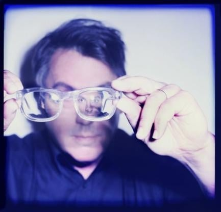
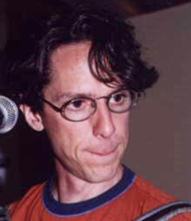
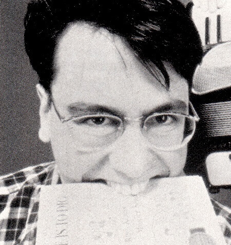
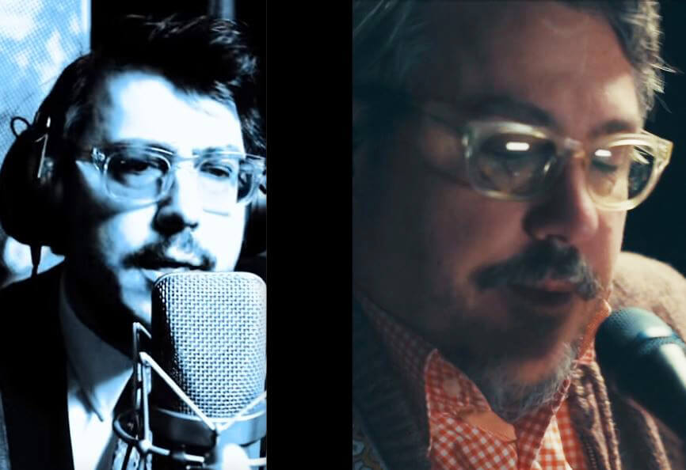
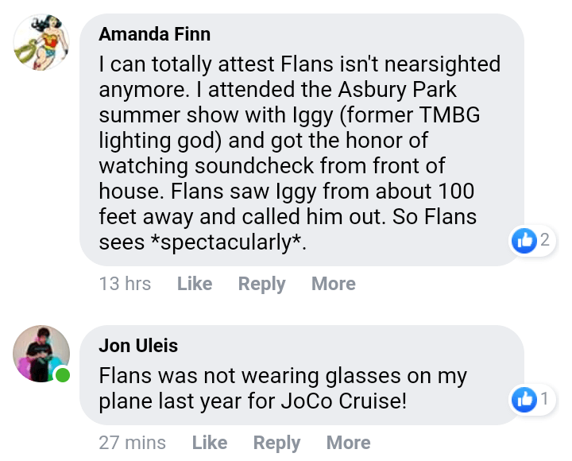
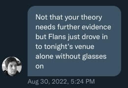
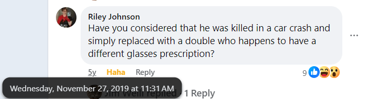

2023 UPDATE: Flans, on the official blog:
(A) decade ago I had the lenses in my eyes replaced with synthetic lenses (after 20 years of very strong glacoma medication, the side effect of cataracts developed which left me with the very distracting problem of double vision and deeply dimmed vision which was kind of untenable) so I am most grateful for all the breakthroughs in the world of eyeball stuff.
Well, well, well.
(Though he seems pretty chill with sharing this information now, I'd like to thank everyone who read this page and didn't ask him about it. As the previous intro said, this little conspiratorial ramble on glasses prescriptions exists for the fun of photo-forensics, not because I wanted anyone to badger him about his medical history.)
And re: Flansburgh's status as Glasses John being a personal image thing, his 2024 response to "When did JL first start wearing his glasses on stage?":
JF: a few years back. I don’t know how I feel about it.
The original argument shall remain below, for posterity.

John Flansburgh hasn't been nearsighted since 2012 and I'm going a little Pepe Silvia over the fact that nobody else seems to have noticed this.
Crash course on how this works:
If you can only see things that are NEAR to you (and anything further is blurry), you are NEARSIGHTED.
If you can only see things that are FAR from you (and anything closer is blurry), you are FARSIGHTED.
Glasses lenses compensate for farsightedness by curving outwards (a convex lens). This makes your eyes look larger, magnified. Here's John Linnell wearing reading glasses to fix his farsightedness. Note how the edge of his face as seen through the glasses is distorted outwards.

Glasses lenses compensate for nearsightedness by curving inwards (a concave lens). This makes your eyes look smaller. Here's John Flansburgh wearing glasses to fix his nearsightedness. Note how the edge of his face as seen through the glasses is distorted inwards.

Because these lenses have opposite structures, a pair of glasses can (almost always) only correct one at a time, unless they are bifocals. If a farsighted person puts on nearsighted glasses, it makes their vision worse. If a nearsighted person puts on reading glasses, it makes their vision worse.
Got it? Good! Now here's a test: one of these pairs of glasses is not like the others. Do you see why?
2012 and before (Note the visible glasses distortion!)
Hints at the timing of corrective eye surgery:
2013 and afterwards (Note the COMPLETE LACK of glasses distortion--these could easily just be sunglasses)
Here's a side-by-side comparison:

Actually, in some cases lately, there is visible lens distortion... that of mild reading glasses. (Example 1) (Example 2)
I still consider this evidence in my favor. If you're already nearsighted enough that you lose your glasses when you take them off (which, same here), wearing reading glasses will give you a wicked headache and leave you walking-into-walls blind. Not something you'd want to be doing while walking around and playing an instrument.
Conclusion: John F. likely has much better eyesight than John L. at this point, but after accidentally making his status as a bespectacled guitarist into a whole identity in the 80s, he's decided to Clark Kent his way through life from here on out. Godspeed, you funky old guitar man. Your secret isn't safe with me, but that's alright, because nobody will believe me (or care).


And, of course...

{kind=link}
{kind=link}
{kind=link}